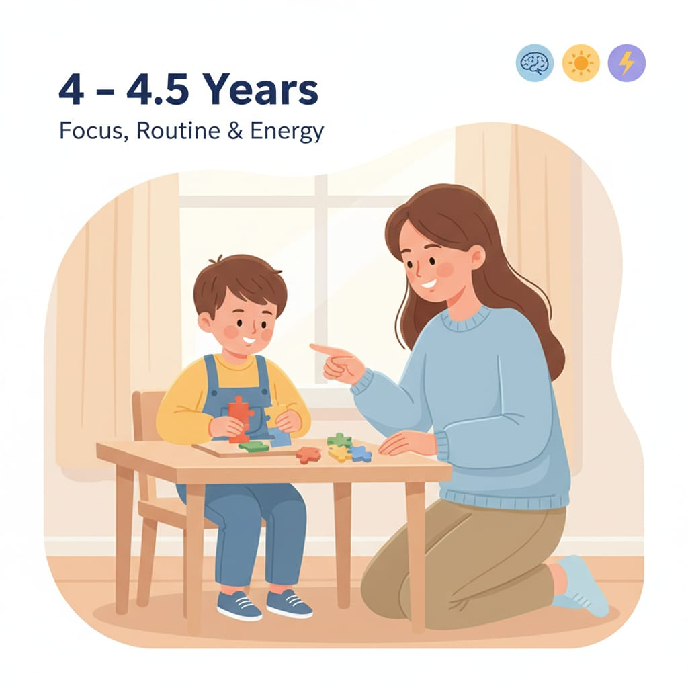

4 – 4.5 سنوات
تركيز الطفل بيبقى أحسن لو البيئة منظمة، والتعليم قصير وواضح، ومع طاقة مُفرَّغة بطريقة صح. أهم مفاتيح المرحلة: روتين ثابت + انتقالات هادية.

قاعدة ذهبية: 10 دقائق تدريب يوميًا (بلا شاشة) تعمل فرق أكبر من ساعة مرة واحدة.